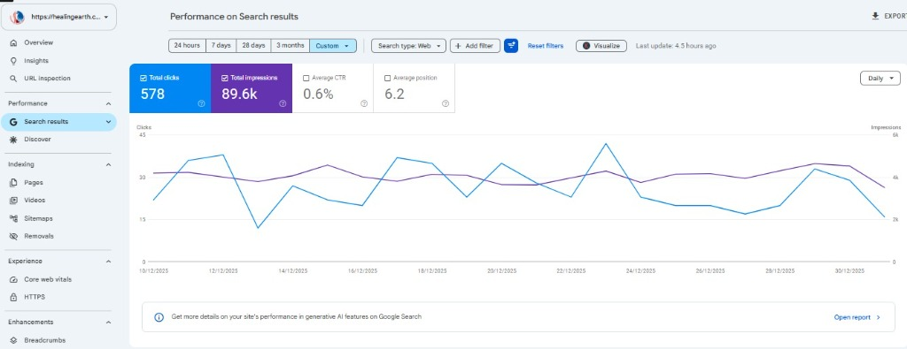
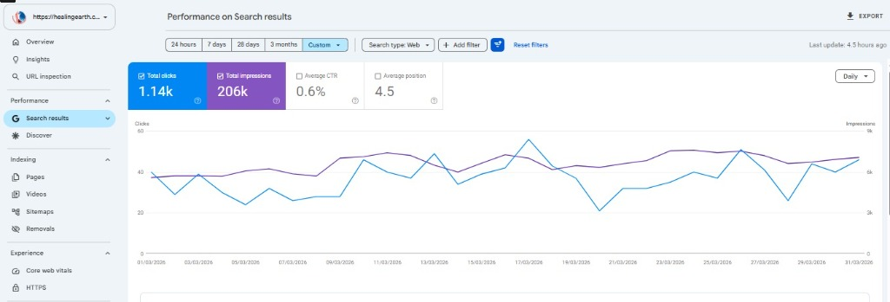

Healing Earth Ayurveda Hospital
Expanding from 2 departments to 7+ departments & 70+ Ayurvedic treatments (73 procedures), running 15 to 20 campaigns/month, and reaching ₹20L to ₹25L/mo (16× revenue, 100 OP) with 3 Layer Automation.

How we started and why Healing Earth was lagging
Experienced Ayurveda & proctology doctors, but patient enquiries were going cold due to manual follow up delays.

From 2 Departments to 7+ Departments, 70+ Treatments & 15–20 Campaigns/Mo
When Healing Earth joined D-Medva under the 3L Patient Plus package, they started with just 2 departments on their website, low search clicks (578/mo), and manual follow ups that caused patient enquiries to drop off.
We expanded their digital presence to 7+ departments and 70+ treatments (73 listed procedures), ran 15 to 20 targeted campaigns in a single month, and connected every lead to 3 Layer Automation (WhatsApp, Auto Call & Campaign Workflow)—scaling to 100 OP consultations and ₹20L to ₹25L/mo revenue (16×).
Where They Were Lagging
-
Only 2 Website Departments: Started with just 2 departments online, leaving most of their Ayurvedic specialties and therapies unseen by patients.
-
Few Campaigns & Low Search Clicks: Limited campaign angles and stuck at 578 monthly clicks (Position 6.2) on Google Search.
-
Slow Manual Lead Replies: Reception delays in sending clinic details and answering calls during busy OP hours caused enquiries to go cold.
-
Low Consultation Volume: Needed a steady growth loop from specialist ads to booked OP consultations across multiple departments.
How We Brought Them Up
-
Expanded to 7+ Depts & 70+ Treatments: Built out 7+ specialty departments and a full treatments directory listing 73 Ayurvedic procedures.
-
15–20 Campaigns/Mo & 2× SEO Clicks: Ran 15 to 20 campaigns in 1 month across Paid Ads, SEO & Events while doubling Google clicks to 1.14k (#4.5 rank).
-
3 Layer Follow Up Automation: Instant WhatsApp replies, automatic call follow up, and campaign workflow tracking so zero leads go unanswered.
-
₹20L–₹25L/Mo Revenue (16× Growth): The growth loop of more departments and more campaigns delivered 100 OP consultations and 16× monthly revenue.
How we run all 4 channels for Healing Earth
Doctor credentialed ads, Top 5 Google SEO, wellness camps, and instant 3 layer follow up.
4 Active Channels (3L Patient Plus Package)
Active 4 Channels
Paid Ads, GMB Maps, Website SEO & 3 Layer Lead Automation.
Paid Ads (Meta & Google)
15 to 20 campaigns/month across 7+ departments and 70+ Ayurvedic treatments.
Search Engine Optimization
Doubled organic clicks (2×), 206k impressions, and #4.5 Top 5 Google rank.
Website & 73 Procedures
Expanded website from 2 departments to 7+ departments and 73 listed procedures.
Event Campaigns & Automation
Seasonal camp ads linked to WhatsApp, Call & Campaign Workflow automation.
7+ Departments & 70+ Treatments
Expanded from 2 departments at launch to 7+ specialty departments (Ortho Neuro, ENT, Psychiatry, Surgery, Gyn, Peds, Skin) & 73 procedures.
15–20 Campaigns Run in 1 Month
More departments and treatments created more campaign angles—running 15 to 20 paid, SEO & event campaigns side by side.
₹20L–₹25L/Mo & 100 OP Snapshot
The growth loop—more departments, more treatments, and 15 to 20 monthly campaigns—drove 100 OP consultations and 16× revenue.
3 Layer Follow Up Automation
Every enquiry is replied to on WhatsApp, called automatically, and tracked in the campaign workflow toward a booking.

3 Layer Automation: How Every Lead Is Followed Up
Every enquiry gets an instant WhatsApp message, automatic call routing, and direct booking tracking.
Instant Reply
Sends clinic details and appointment reminders immediately.
Immediate Call
Triggers call follow up so no enquiry goes unanswered.
Direct Tracking
Moves leads from ad click to booking without manual spreadsheets.
Healing Earth Campaign Creatives & Ad Posters
15 to 20 monthly campaigns across 7+ departments and 70+ Ayurvedic treatments.
Healing Earth Ayurveda Hospital Campaign Creatives & Projects
healingearth.co.in · 7+ Departments · 70+ Treatments · 15–20 Campaigns/Mo


SEO Optimization: 578 Clicks to 1.14k Clicks (2× Doubled)
Verified Before & After Google Search Console performance for healingearth.co.in showing 2× organic click growth, 2.3× impression growth (206k), and a Top 5 average search ranking (#4.5).

